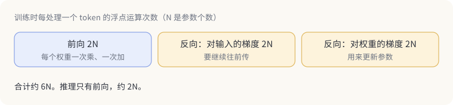
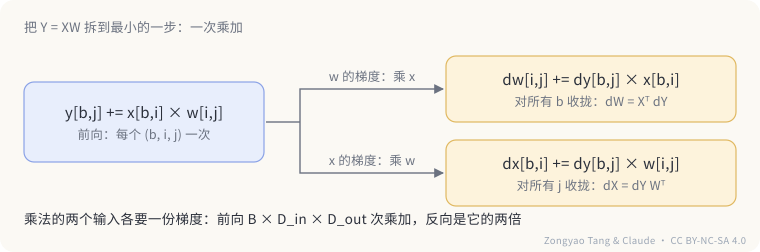
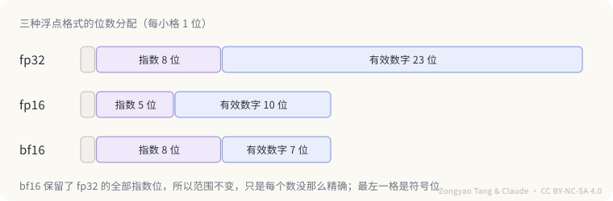

线索是：先建立一把尺子，估算训练到底需要多少运算 → 第一种提速手段是用更少的位数表示数字 → 第二种几乎是免费的：把尺寸凑整 → 最后把视频里用到的所有手段摆在一起，看每一种对付的是哪类瓶颈。这一单元是后面所有系统单元的地图，配合第 0 部分一起读最好。
第 1 部分 · 深度学习原理1.5 复现 GPT-2：从模型到高效训练
这一单元回答一次真实的训练，时间都花在哪？每种提速手段省下的是什么？
承接 1.4：同一个模型，现在关心它在 GPU 上跑得多快。这是后面所有系统单元的地图。
讲解
1训练每个 token，大约要 6N 次浮点运算
N 是参数个数。前向时每个参数参与一次乘加，约 2N 次运算；反向要算对输入和对权重的两份梯度，约 4N 次。用它乘以训练的 token 数，再除以 GPU 的算力，就得到训练时间的理论下限。
数矩阵乘法。 4.1 会详细讲：Transformer 的运算量几乎全在矩阵乘法里。一个线性层把输入乘以权重矩阵，对一个位置的输入来说，每个权重参与一次乘法和一次加法，共 2 次浮点运算。模型的参数绝大部分是这些权重矩阵里的元素。所以处理一个 token（一个位置）：
- 前向：每个参数 2 次运算，约 2N。
反向。 1.1 讲过，反向经过每一层时要算两样东西：
- 损失对这一层输入的梯度（要继续往前传）：一次和前向同样规模的矩阵乘法，约 2N。
- 损失对这一层权重的梯度（用来更新参数）：又一次同样规模的矩阵乘法，约 2N。
反向合计约 4N。前向加反向，每个 token 约 6N 次浮点运算。

三次同样规模的矩阵乘法 它忽略了什么。 注意力里“Q 乘 Kᵀ”和“乘以 V”这两步不涉及参数，运算量和序列长度有关，没有算进来；归一化、激活函数的运算量很小，也没算。词嵌入表算进了 N，查表却不做乘法；GPT-2 的输入和输出共用这张表，它在输出层正好做一次乘法，几乎不多算，两张表分开的模型才会多算输入那一张。所以它是一个量级上的估计，对常见的配置误差在一两成以内（下面的选读把这两笔账算了一遍）。
用处一：估算训练要多久。 总运算量 = 6N × 训练的 token 总数。除以硬件的实际运算速度，就是时间。124M 参数的 GPT-2 训练 100 亿个 token：6 × 1.24×10⁸ × 10¹⁰ ≈ 7.4×10¹⁸ 次。一张峰值 312 TFLOPS 的 A100 即使百分之百用上，也要 6.6 小时；按 40% 的利用率，是 16 小时左右。动手之前先算这一笔，能知道一个计划是否现实。
用处二：算 MFU。 0.2 讲过：MFU = 实际完成的运算速度 ÷ 硬件峰值。分子就是 6N × 实测的每秒 token 数。它告诉你离硬件的上限还有多远。
用处三：比较不同的模型和硬件。 模型大 10 倍，每个 token 的成本就大 10 倍。换一种 GPU，看它的峰值算力就能大致知道吞吐会怎么变（前提是别的瓶颈没有先出现）。
推理也有对应的估算：只有前向，每个 token 约 2N。但 4.1 讲过，逐词生成时瓶颈不在运算量而在显存带宽，那时要换一把尺子。
选读：为什么反向的运算量约是前向的两倍
从一个数开始。 最小的“一层”：y = w × x，损失 L = ½(y − t)²。取 x = 3、w = 2、目标 t = 10。
- 前向：y = 2 × 3 = 6，L = ½ × (6 − 10)² = 8。用了 1 次乘法。
- 反向先从损失那头拿到 ∂L/∂y = y − t = −4，也就是 1.1 里从后往前传的那个数。
- 对权重：∂L/∂w = ∂L/∂y × x = −4 × 3 = −12。1 次乘法。
- 对输入：∂L/∂x = ∂L/∂y × w = −4 × 2 = −8。又 1 次乘法。
前向 1 次，反向 2 次。原因在乘法本身：y = w × x 对 w 的导数是 x，对 x 的导数是 w。乘法有两个输入，各要一份梯度，每一份都是“传回来的梯度 × 另一个输入”。
一层：前向每一次乘加，反向还两次。 线性层 Y = XW 只是把很多个这样的乘法排在一起：X 是 B × D_in（B 个 token），W 是 D_in × D_out，Y 是 B × D_out。前向里的每一次乘加是
y[b,j] += x[b,i] × w[i,j]反向时，它恰好对应两次乘加：
dw[i,j] += dy[b,j] × x[b,i]：对所有 b 收拢起来，就是矩阵乘法 dW = Xᵀ dY。dx[b,i] += dy[b,j] × w[i,j]：对所有 j 收拢起来，就是 dX = dY Wᵀ。

前向的一次乘加，在反向变成两次 算什么 形状 乘加次数 前向 Y = XW (B × D_in)(D_in × D_out) B × D_in × D_out 反向，对权重 dW = Xᵀ dY (D_in × B)(B × D_out) B × D_in × D_out 反向，对输入 dX = dY Wᵀ (B × D_out)(D_out × D_in) B × D_in × D_out 所以不只是“差不多两倍”：前向的乘加和反向的乘加是一对二地对应。一次乘加记 2 次浮点运算，摊到每个 token，前向是 2 × D_in × D_out，正好是这一层参数个数的 2 倍。所有层加起来，就是正文的 2N、4N、6N。
顺便也看清了 dW 为什么要对 batch 求和：同一个 w[i,j] 在前向里被 B 个 token 各用了一次，每用一次欠一份梯度，dW 把这 B 份加在一起。
自己数一遍。 PyTorch 的
FlopCounterMode会数出每个矩阵乘法的浮点运算次数：import torch from torch.utils.flop_counter import FlopCounterMode x = torch.randn(4, 3, requires_grad=True) # B = 4 个 token，D_in = 3 layer = torch.nn.Linear(3, 2, bias=False) # D_out = 2 with FlopCounterMode(display=False) as fc: y = layer(x) print(fc.get_total_flops()) # 48 = 2 × 4 × 3 × 2 with FlopCounterMode(display=False) as fc: y.sum().backward() print(fc.get_total_flops()) # 96：两次同样大小的矩阵乘法把第一行的
requires_grad=True去掉，反向只剩 48：输入不需要梯度，dX 那一次就省了。哪里不是两倍。
- 不需要梯度的输入。 上面刚看到，输入是原始数据时 dX 可以不算。但语言模型的第一个矩阵乘法吃的是词嵌入的输出，嵌入表要训练，所以 dX 照样要算；能省的只是图像模型第一层这类情形，在整个模型里占比很小。
- 逐元素的算子。 激活函数、残差相加、归一化，反向要几次运算各不相同，比如 ReLU 的反向只是按前向时的正负决定梯度放不放行。它们在运算次数里微不足道（4.1），不影响 6N；但它们受带宽限制，花的时间不少。
- 注意力里的两次矩阵乘法。 Q 乘 Kᵀ 和“乘以 V”的两边都是激活值，两边都要梯度，反向同样是前向的两倍。但它们没有参数，不在 N 里，是 6N 之外的一笔账，下一段选读专门算它。
- 重算。 用 activation checkpointing（2.2）省显存时，反向之前要把前向再跑一遍，实际执行的运算约 8N；Flash Attention 反向时也会把 Q 乘 Kᵀ 再算一遍（4.4）。MFU 的分子仍按 6N 算：重算是为省显存多做的功，不算有效运算。把重算也数进去的叫 HFU（硬件运算利用率），有重算时它比 MFU 高。
- 优化器那一步。 Adam 更新每个参数要十几次运算，但这是每一步一次，不是每个 token 一次。一步通常处理几十万到几百万个 token，摊下来可以忽略。
选读：6N 在哪里不准：注意力和词嵌入
6N 背后的假设。 2N 这一步默认了一件事：N 里的每个参数，处理每个 token 时恰好参与一次乘加。偏离它有两个方向：有运算却没有参数，6N 就少算；有参数却没有运算，6N 就多算。注意力和词嵌入各占一个方向。
少算：注意力里没有参数的那两次矩阵乘法。 一个 token 在一层里要和序列中的 T 个位置各打一次交道：Q 乘 Kᵀ 是 T 个长度为 d 的点积，约 2 × T × d 次运算；乘以 V 是把 T 个 d 维向量加权求和，又是约 2 × T × d。前向合计 4 × T × d，反向照样是两倍（两边都要梯度），训练一共 12 × T × d。这里的 d 是隐藏维度，各个头的维度加起来就是它。
拿它和 6N 比。按标准结构粗算，一层的参数约 12d²（注意力的四个矩阵 4d²，宽为 4d 的 MLP 8d²），6N 摊到这一层是 72d²。两者之比约 T ÷ 6d：
d T 注意力多出来的，相对各层的 6N 768 1024 约 22% 4096 4096 约 17% 4096 32768 约 133% 第一行就是 GPT-2 small。比例只看 T ÷ d：模型越宽，同样的序列长度影响越小；序列越长，这一项越大，到了几万的上下文，它比 6N 本身还大。有因果掩码时，每个 token 平均只看得到前面一半，跳过被遮住部分的实现（比如 Flash Attention）大约只做一半。
多算：只查不乘的嵌入表。 词嵌入是一张 V × d 的表（V 是词表大小）。前向时按 token 的编号取出一行，没有乘法；反向时也只是把梯度加回那一行。如果这张表算进了 N，6N 就替它多算了 6 × V × d 次。
多算多少，看这张表占 N 的比例。设词表 V = 128,000（示意）：
d N（示意） 嵌入表 V × d 占 N 2048 15 亿 2.6 亿 约 17% 8192 700 亿 10.5 亿 约 1.5% 这就是“小模型里会高估”：模型小了，词表却不跟着变小，这张表在参数里的份额就大。
GPT-2 不在此列：输入和输出共用一张表。 模型最后要把隐藏向量变成每个词的分数，这一步乘以一个 d × V 的矩阵，是实打实的矩阵乘法。GPT-2 让它和输入嵌入共用同一张表（权重共享）：这张表在 N 里算一次，在输出层恰好做一次乘加，6N 对它是准的。多算的只有位置嵌入（1024 × 768，约 79 万，不到 N 的 1%）。输入、输出各用一张表的模型，输出那张算得准，输入那张多算。
反过来也有：有的论文（比如 Kaplan 等人的缩放定律）用的 N 不含嵌入参数，这时输出层那次乘法也没算进去，小模型里反而会低估。用别人的数字之前，先看清它的 N 含不含嵌入。
合起来看 0.2 的例子。 GPT-2 small，N = 1.24 亿，T = 1024。嵌入表共用，几乎不多算；注意力那一项 12 层共约 1.1 亿次，是 6N（约 7.5 亿）的 15%，扣掉被掩码遮住的一半约 8%。所以按 6N 算出的 MFU 比按更完整的算法略低一些，量级不变。想要更准，就像 0.2 说的，用工具数出前向的运算次数再乘 3。
打个比方像估算搬家时间：知道一共多少箱、每小时最多搬多少箱，就能算出至少要几小时。
所以拿到训练任务先估算：124M 的 GPT-2 训练 100 亿个 token，大约需要 7.4×10¹⁸ 次运算。实际吞吐和这个理论值的比值（MFU）告诉你还有多少优化空间。
后面会用到 先算出理论上限，才知道还差多远- 有了尺子，来看视频里依次使用的几种提速手段。第一种改动最小，效果最明显。
2少用几位数字，就少搬一半数据
fp32 每个数 4 字节，bf16 只要 2 字节。矩阵乘法换成 TF32 或 bf16 后能跑在 Tensor Core 上，显存读写量也减半。bf16 和 fp32 的指数位一样多，数值范围相同，只是精度低一些。

位数怎么分，决定了范围和精度 浮点数的三个部分。 一个浮点数由符号、指数、有效数字（尾数）组成。指数决定能表示多大和多小的数（范围），有效数字决定能精确到几位（精度）。
格式 总位数 指数 有效数字 范围 精度 fp32 32 8 位 23 位 很大 约 7 位十进制 fp16 16 5 位 10 位 小得多 约 3 位十进制 bf16 16 8 位 7 位 和 fp32 相同 约 2–3 位十进制 bf16 可以看成“把 fp32 的有效数字砍掉 16 位”：指数部分原样保留，所以能表示的范围和 fp32 一样，只是每个数没那么精确。fp16 则是两头都缩了。
为什么会变快。两个独立的原因。
- 能用上 Tensor Core。 GPU 上有专门做矩阵乘法的硬件单元，它要求低精度的输入，算力比普通单元高一个量级（4.5）。这对付的是算力受限的矩阵乘法。
- 要搬的数据减半。 每个数从 4 字节变成 2 字节。同样的显存带宽，每秒能读写的元素个数翻倍。这对付的是带宽受限的那些算子（归一化、激活函数等）。显存占用也减半，可以放更大的 batch。
TF32：不改数据类型的折中。 数据仍然是 fp32，但做矩阵乘法时，Tensor Core 内部只用其中一部分有效数字来算。只拿到了上面第一个好处，没有第二个；好处是不用改任何代码，只要打开一个开关。Karpathy 的视频里先开的就是它，然后才换成 bf16。
精度降低为什么可以接受。 训练本来就充满噪声：每个 batch 的梯度都是带偏差的估计。有效数字少几位带来的误差，比这个噪声小得多。但有几个地方不能省：
- 参数的更新：每一步的更新量相对参数很小，在 16 位下会被舍入掉。所以参数的主副本和优化器状态仍然用 32 位（7.2 的 16 字节）。
- 大范围的累加、指数和对数：误差会累积或溢出。
这就是“混合”精度的含义：计算量大的部分用 16 位，敏感的部分保留 32 位。哪些算子用哪种精度，由 2.6 讲的 autocast 自动安排。
bf16 还是 fp16。 范围小的 fp16 会让很小的梯度变成零，需要额外的损失缩放来补救（2.6）。bf16 没有这个问题，是现在的首选。
打个比方像记账只保留三位有效数字：绝大多数计算不受影响，却写得更快、更省纸。
所以混合精度往往是最省事的提速：矩阵乘法用低精度，对数值敏感的地方（累加、损失、优化器状态）保留 fp32。
后面会用到 把维度凑成 64、128 的倍数，几乎免费的提速每种提速手段，对付的是不同的瓶颈autocast：算子调用的路上多了一站，按算子的类型决定用什么精度fp16 要缩放损失，bf16 通常不用出处Accelerate bfloat16Accelerate 数值格式对照表- 第二种手段看起来像玄学，其实有很具体的硬件原因。
3把维度凑成 64、128 的倍数，几乎免费的提速
GPU kernel 按固定大小的块处理数据。维度不是块大小的整数倍时，边角那一块要额外处理，常常走慢路径。复现 GPT-2 时把词表从 50257 补到 50304（128 的倍数），多算了一点无用的行，整体却更快了。
视频里的例子。 GPT-2 的词表大小是 50257，一个很“难看”的数。把它补到 50304（等于 128 × 393），多出来的 47 个词永远不会被用到，模型白白多了一些参数和计算。结果训练反而快了几个百分点。
原因在 kernel 的写法。 第 3、4 部分会反复看到：GPU 上的 kernel 是按“块”处理数据的。
- 线程以 32 个为一组（warp）执行。
- 矩阵乘法的 kernel 把矩阵切成固定大小的小块，比如 16×16、64×64、128×128，一块一块地处理（3.3、4.5）。
- Tensor Core 的一条指令处理一个固定形状的小矩阵。
维度正好是块大小的整数倍时，所有的块都是满的，kernel 走的是最优化的那条路径。
不是整数倍时，最后会剩下一条不满的“边”。对这条边，kernel 有几种处理办法，都有代价：
- 另外用一段通用但较慢的代码来处理边角。
- 把边角补成满块来算，再把多余的结果丢掉（要额外的拷贝或掩码）。
- 整个运算换用一个对任意尺寸都适用、但没那么快的实现。
具体走哪条取决于库的实现，从外面看不到，只是慢了一些。
为什么是 2 的幂。 上面这些块的大小几乎都是 2 的幂（16、32、64、128）。一个数是 128 的倍数，它同时也是 64、32、16 的倍数，无论 kernel 内部用哪种块大小都能整除。所以“取 2 的幂或者 64、128 的倍数”是一个不需要知道内部细节的安全选择。
哪些维度值得凑。 隐藏维度、每个头的维度（1.4 说过通常是 64）、MLP 的中间维度、词表大小、batch 大小、序列长度。这也是为什么常见的模型配置里全是 768、1024、4096 这样的数。
更一般的道理。 这是 0.1 里“成批处理”的一个侧面：硬件和库都是为规整的、成块的数据优化的。让数据的形状迎合硬件的块，比让硬件去适应不规整的数据便宜得多。2.5 里固定形状以避免重新编译、2.1 里固定张量大小以减少显存碎片，是同一个道理在不同层上的表现。
打个比方像装箱：货物尺寸正好是箱子的整数倍时，每个箱子都装满；差一点的话，就得为零头单独找箱子。
所以设计模型时，隐藏维度、头维度、词表大小都尽量取 2 的幂或 64、128 的倍数。
- 视频里一共用了五六种手段，把训练速度提高了一个量级。把它们放在一起看，会发现它们并不重复。
4每种提速手段，对付的是不同的瓶颈
TF32/bf16 加快矩阵乘法（算力）；torch.compile 把多个逐元素算子合成一个 kernel（显存带宽和启动开销）；FlashAttention 不写出 N×N 的注意力矩阵（显存带宽）；梯度累积和多卡训练则是在显存和规模上做文章。
把视频里的手段按它们对付的瓶颈重新排列。瓶颈的分类用的是第 0 部分的语言。
手段 对付的瓶颈 原理 细讲的单元 TF32、bf16 算力；带宽 Tensor Core；数据减半 2.6、4.5 torch.compile 发令的开销；带宽 去掉逐算子的开销；融合 2.5、4.2 Flash Attention 带宽；显存 不让 N×N 的矩阵落地 4.4 维度凑整 算力 走 kernel 的快速路径 上一节 fused AdamW 发令的开销；带宽 优化器的十来步合成一个 kernel 2.6 梯度累积 显存 用几个小 batch 凑一个大 batch 1.3 多卡 DDP 规模 把数据分给多张卡 7.1 几个观察。
- 没有哪一种是万能的。 每种只对它针对的那类瓶颈有效。模型的时间如果全在矩阵乘法上，torch.compile 帮助有限；如果全在发令上，换 bf16 也没用。
- 它们可以叠加，但不是简单相乘。 消除了一个瓶颈，另一个就成了新的瓶颈。视频里每加一样手段，收益的大小都取决于当时“轮到谁是瓶颈”。这是 0.1 的第一个思想。
- 顺序有讲究。 先做便宜的、收益大的（精度、编译），再做需要改代码的。
怎么知道自己的瓶颈是哪一类。 不能靠猜，要量（0.2）：
- 加倍 batch，看时间是否跟着加倍（2.3）：判断是不是开销受限。
- 反复喂同一个 batch（2.4）：判断是不是数据受限。
- 看 profiler 里矩阵乘法占 GPU 时间的比例（4.1）：判断算力受限的部分有多大。
- 算 MFU（0.2）：知道总体上离上限多远。
这张表就是后面课程的目录。 第 2 部分讲框架这一层的手段，第 3、4 部分讲 kernel 这一层为什么这些手段有效，第 5–7 部分讲规模上去之后的通信。读后面的任何一个单元时，都可以回到这张表，问一句：它在对付哪一类瓶颈。11.1 会用几个完整的案例把这张表再走一遍。
打个比方像给一家餐厅提速：换更快的灶（算力），把备菜动线理顺（带宽），减少来回跑腿（开销），再多开几家分店（多卡）。
所以每用一种手段之前，先问它省的是哪一样，再用 profiler 验证。后面的每个部分，都在深入其中一项。
出处Accelerate 第 1 章 拆解训练过程
串起来
训练每个 token 约需 6N 次浮点运算，由此可以估出理论上限和 MFU。低精度让矩阵乘法用上 Tensor Core，也让读写量减半。把维度凑整避免了 kernel 的慢路径。每种提速手段对付的瓶颈不同：算力、带宽、开销、显存，用之前先问它省的是哪一样。
考考自己
不看讲解，用自己的话讲一遍。
- “训练每个 token 约需 6N 次浮点运算”是怎么估出来的？它有什么用？
- fp32、fp16、bf16 有什么区别？为什么降低精度能让训练变快？
- 为什么把张量的维度取成 64、128 的倍数会更快？
- 复现 GPT-2 时用到的几种提速手段，各自对付的是哪一类瓶颈？
术语
- mixed precision
- 混合精度
- throughput
- 吞吐量
- kernel fusion
- 算子融合
- gradient accumulation
- 梯度累积